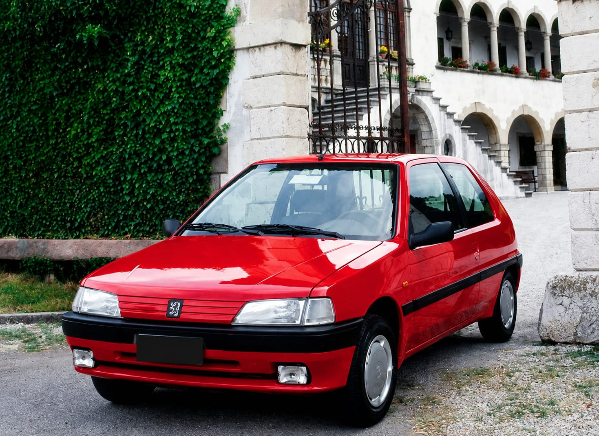
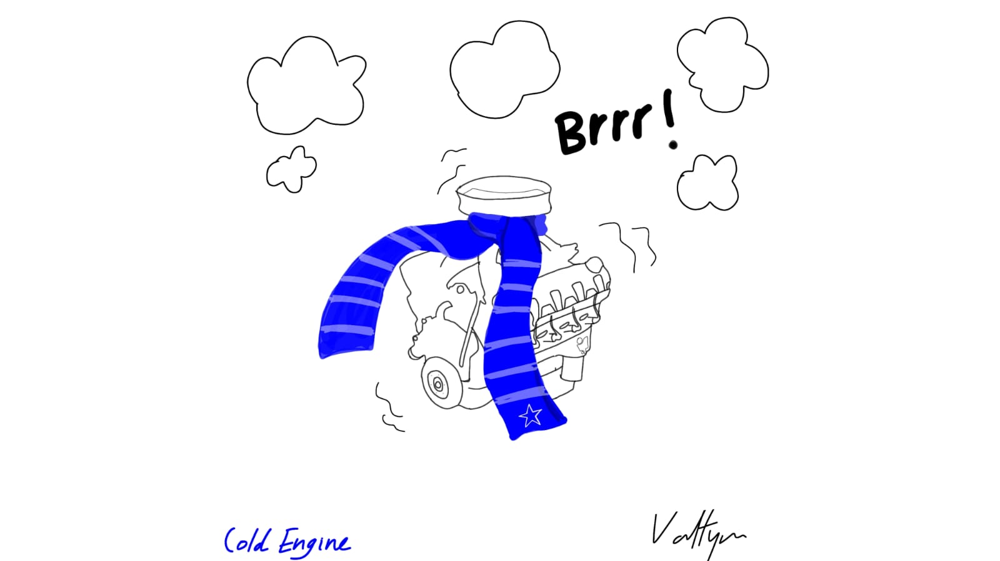
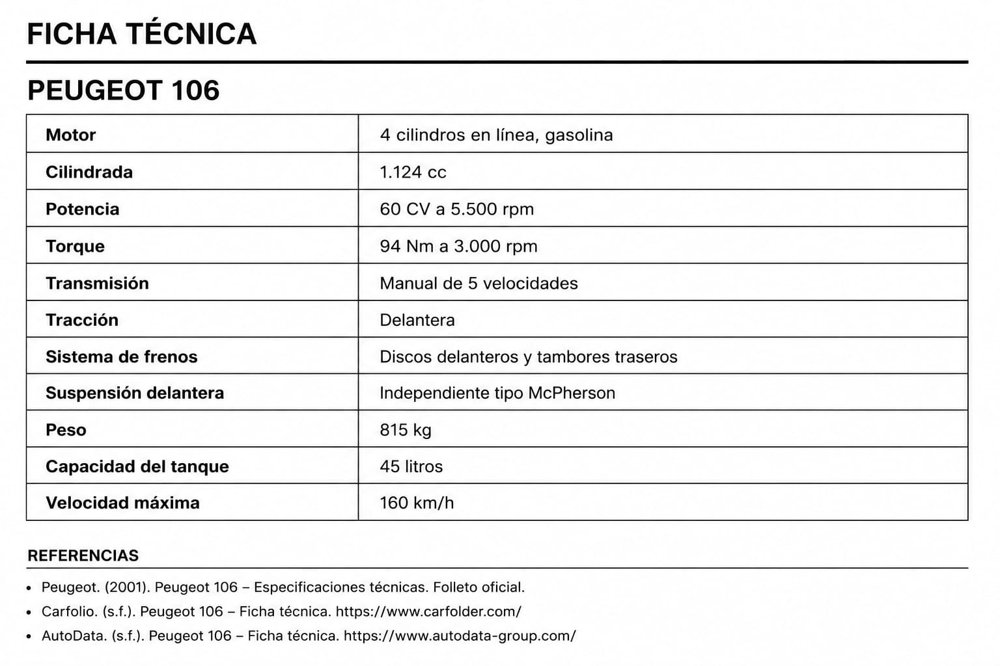

El auto que me enseñó a ser libre
ML – Entre el colegio, las primeras aventuras y un auto familiar que terminó marcando una etapa inolvidable de la vida.
21 de mayo de 2026 | 5:00 p. m.

«Tuve mi primer auto en el año 2000. No era nuevo, pero era un auto realmente divertido. Aprendí muchísimo con él e incluso lo conducía para ir al colegio», recuerda un propietario que prefiere mantener su identidad en el anonimato. Explica que, a los 18 años, tuvo que repetir su último año de bachillerato. Sin embargo, había algo positivo: sus clases de conducción ya estaban pagadas y, para diciembre del año 2000, había obtenido su licencia de conducir. Al año siguiente, utilizaba el auto todos los días para ir al colegio. Aunque no era el vehículo más nuevo ni el más lujoso, significaba muchísimo para él. Era el Peugeot 106 de la familia. «Era un auto muy sencillo, pero increíblemente divertido de conducir y estaba muy bien cuidado. Tenía sus pequeñas particularidades; por ejemplo, tendía a apagarse cuando el motor estaba frío, pero aprendí mucho con él».
¿Por qué el Peugeot 106 se apagaba cuando estaba frío?
En los motores con carburador, el combustible no se vaporiza con tanta facilidad cuando el motor está frío. Para facilitar el arranque, estos vehículos estaban equipados con un sistema de estrangulador, conocido como choke, que podía ser manual o automático. Este mecanismo enriquecía temporalmente la mezcla de aire y combustible hasta que el motor alcanzaba su temperatura normal de funcionamiento.
Si el estrangulador no se utilizaba correctamente o se desactivaba demasiado pronto, el motor podía apagarse.
Fuente: Engineer Fix, «Cómo funciona el estrangulador para arrancar un motor frío».

Peugeot en frío – ML (Valtyna)
Peugeot 106 y Citroën Saxo
Aunque pertenecen a marcas diferentes, ambos vehículos fueron desarrollados por el Grupo PSA. Comparten diversos componentes estructurales, piezas mecánicas, transmisiones y motores, mientras que cada uno conserva su propio diseño y personalidad.
106 Électrique
El Peugeot 106 Électrique se presentó en 1995 y es considerado uno de los primeros autos eléctricos producidos en serie en Europa. Utilizaba baterías de níquel-cadmio (Ni-Cd), alcanzaba una velocidad máxima aproximada de 90 km/h y ofrecía una autonomía de entre 80 y 100 kilómetros, por lo que estaba diseñado principalmente para desplazamientos urbanos.
